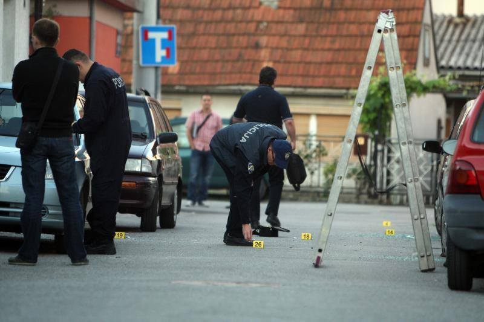

Računalni kriminal
Računalni kriminal može uključivati krađu podataka, neovlašteni pristup računima, računalne prijevare, krađu identiteta i zlouporabu platnih podataka.
Informacije o računalnom kriminalu, krađi bankovnih kartica i njihovoj zlouporabi.
Računalni kriminal obuhvaća različite oblike nezakonitih aktivnosti u kojima se računala, mobilni uređaji, računalne mreže ili internet koriste kao sredstvo počinjenja kaznenog djela ili kao cilj napada.
Računalni kriminal može uključivati krađu podataka, neovlašteni pristup računima, računalne prijevare, krađu identiteta i zlouporabu platnih podataka.
Krađa bankovne kartice predstavlja sigurnosni rizik jer se ukradena kartica može pokušati zloupotrijebiti za plaćanje ili podizanje novca.
Ukoliko kartica dospije u ruke druge osobe, može postojati rizik od pokušaja neovlaštenog korištenja. Za određene transakcije potrebna je dodatna autentifikacija, primjerice PIN.
Razvojem digitalnog bankarstva i elektroničkog plaćanja povećao se i značaj zaštite financijskih podataka. Posebno su važni podaci povezani s bankovnim karticama, bankovnim računima i pristupom elektroničkom bankarstvu.
Vlasnik kartice treba odmah reagirati ako primijeti da je kartica izgubljena ili ukradena. Najvažnije je što prije kontaktirati banku i zatražiti blokiranje kartice.

Bankomati su važan dio suvremenog financijskog sustava, ali njihova uporaba također zahtijeva oprez.
Korisnici bi prilikom korištenja bankomata trebali zaštititi unos PIN-a od pogleda drugih osoba, pregledati uređaj prije uporabe i biti oprezni ako bankomat izgleda neuobičajeno ili ako postoje sumnjivi dodaci na otvoru za karticu ili tipkovnici.
Ako kartica ostane zadržana u bankomatu, korisnik ne bi trebao prihvaćati pomoć nepoznatih osoba niti drugima davati PIN. Potrebno je kontaktirati banku putem službenog broja za korisnike.
Karticu treba čuvati na sigurnom mjestu i ne ostavljati je bez nadzora.
PIN treba držati u tajnosti i prilikom njegova unosa zaštititi tipkovnicu od pogleda drugih osoba.
Redovito provjeravajte transakcije i odmah prijavite banci svaku transakciju koju ne prepoznajete.
Ako je bankovna kartica izgubljena ili ukradena, potrebno je što prije kontaktirati banku i zatražiti njezino blokiranje.
Nakon blokiranja kartice potrebno je provjeriti posljednje transakcije i obavijestiti banku o svakoj transakciji koju vlasnik kartice ne prepoznaje.
PIN, jednokratne sigurnosne kodove i druge sigurnosne podatke ne treba davati nepoznatim osobama niti ih slati putem poruka ili elektroničke pošte.